Reforma Tributária: tudo o que muda, explicado para Canindé
Notícias e orientações sempre com base nas publicações oficiais do Comitê Gestor do IBS (CGIBS) e da Receita Federal, traduzidas pela Secretaria de Finanças para a realidade do município.
Prestador de serviço: prepare-se para emitir pelo Emissor Nacional
Primeiro acesso, passo a passo da nota, vídeos e atendimento presencial da Secretaria.
Entrar no ambiente ➜
Últimas do Comitê Gestor do IBS
Capturadas automaticamente do site oficial cgibs.gov.br. Quando a notícia afeta Canindé, a Secretaria acrescenta uma explicação.
Sincronizado com cgibs.gov.br hoje às 06:00
O portal confere o site do Comitê Gestor várias vezes ao dia. Nenhuma notícia oficial fica de fora.
Para quem é este portal
MEI e Simples Nacional: a decisão de 2027
Prestadores de serviço: ISS e NFS-e nacional
Contadores: legislação e comunicados
Cidadão: o que muda no dia a dia
Conexão Empresarial Canindé · 19/09/2026
Respondemos as perguntas dos participantes
24 perguntas sobre Simples Nacional, MEI, preços, serviços e nota fiscal, agrupadas por tema.
Comece por aqui
Conteúdo produzido pela Secretaria de Finanças.
Entenda a reforma
IBS, CBS, cobrança no destino, nanoempreendedor e cashback, com a base legal de cada ponto.
Simples “puro” ou “híbrido”?
O guia da decisão de 2027 para micro e pequenas empresas, com os prazos novos.
Cronograma 2026–2033
Ano a ano, o que entra em vigor e o que acontece com o ISS de Canindé.
Vídeos e palestras
Gravações da Secretaria, vídeos oficiais do CGIBS e materiais das palestras em Canindé.
Pergunte à Secretaria
Não achou a resposta? Envie sua dúvida e receba um protocolo. A resposta chega por e-mail.
Como garantimos que a informação é oficial
1
Captura automática
O portal lê as notícias, comunicados, legislação e vídeos publicados no site do CGIBS.
2
Leitura da equipe
A Secretaria classifica por público e marca o que tem prazo.
3
Explicação local
Quando afeta Canindé, acrescentamos “o que isso significa para você”.
4
Sempre com a fonte
Todo conteúdo mostra a base oficial e o link para o original.
Entenda a Reforma Tributária do consumo
Guia explicativo para cidadãos e empresas. Cada bloco traz o artigo da lei em que se baseia.
Início › Reforma Tributária › Entenda a reforma
1. Cinco tributos viram dois (IVA dual)
Os tributos sobre o consumo são substituídos por uma única regra, igual em todo o país.
ISS · municipalICMS · estadualPIS · federalCofins · federalIPI · federal
➜
CBSContribuição sobre Bens e Serviços · União substitui PIS e Cofins
IBSImposto sobre Bens e Serviços · Estados e Municípios substitui ICMS e ISS
Imposto Seletivo · cobrado sobre produtos prejudiciais à saúde ou ao meio ambiente. O IPI é zerado, exceto para produtos que também são fabricados na Zona Franca de Manaus.
Base oficial: EC 132/2023 · LC 214/2025
2. Os pilares da nova tributação
Cobrança no destino
O IBS passa a pertencer ao município onde o bem ou serviço é consumido, e não mais onde fica a sede da empresa. Isso enfraquece a guerra fiscal entre municípios.
A mudança na divisão da arrecadação entre municípios é gradual, de 2029 a 2077.
Imposto “por fora” e visível na nota
O tributo deixa de vir embutido no preço. A nota mostra quanto foi pago de IBS e de CBS.
Pessoas físicas são identificadas pelo CPF, empresas pelo CNPJ e imóveis urbanos e rurais pelo CIB (Cadastro Imobiliário Brasileiro). Os dados são compartilhados entre União, estados e municípios.
LC 214/2025, art. 59
3. Simples Nacional, MEI e nanoempreendedor
Simples e MEI continuam
Os pequenos negócios mantêm o recolhimento unificado no DAS, com simplicidade e carga favorecida.
Opção “híbrida”
Empresa do Simples pode recolher IBS e CBS por fora do DAS, no regime regular, para gerar crédito integral para os clientes que são empresas.
Nanoempreendedor
Pessoa física com receita bruta abaixo de 50% do limite do MEI, e que não aderiu ao MEI, não é contribuinte de IBS e CBS.
LC 214/2025, art. 26
4. Cashback: devolução para famílias de baixa renda
Para famílias inscritas no CadÚnico com renda de até meio salário mínimo por pessoa, CPF regular e residência no Brasil.
100%da CBS
20%do IBS
Serviços essenciais
Botijão de gás de até 13 kg, energia elétrica, água, esgoto, gás canalizado e telecomunicações.
20%da CBS
20%do IBS
Demais compras
Percentual mínimo de devolução nas outras compras de bens e serviços.
Base oficial: LC 214/2025, arts. 112 a 118 (percentuais no art. 118)
5. Transição gradual: 2026 a 2033
Peso do ISS e do ICMS (cinza) frente ao IBS (laranja) em cada ano. A CBS vale integralmente desde 2027.
Tudo o que o Comitê Gestor do IBS publica, no mesmo dia. Com a explicação da Secretaria quando o assunto afeta Canindé.
Início › Reforma Tributária › Notícias oficiais
Última verificação: hoje às 06:00
Fontes acompanhadas:
cgibs.gov.br — Notícias
cgibs.gov.br — Comunicados oficiais
cgibs.gov.br — Legislações e resoluções
cgibs.gov.br — Vídeos, guias e cartilhas
Receba por e-mail ou WhatsApp
Cadastre-se para receber um aviso quando sair prazo novo ou prorrogação.
Início › Reforma Tributária › Guias › Simples Nacional em 2027
GuiaMEI e Simples NacionalPrazo até 30/10
Simples “puro” ou “híbrido”: a decisão de 2027 para micro e pequenas empresas
Secretaria Municipal de Finanças · atualizado em 02/10/2026 após a prorrogação de prazos · leitura de 5 min
O Simples Nacional continua existindo, o MEI mantém o tratamento simplificado e o limite geral continua em R$ 4,8 milhões. O que muda é que, a partir de 2027, o IBS e a CBS entram no Simples, e a empresa precisa escolher como vai recolher esses dois tributos.
As duas trilhas
Simples “puro”
IBS e CBS dentro do DAS
Operação mais simples
Não aproveita créditos nas compras
Gera crédito menor para o cliente
Simples “híbrido”
IBS e CBS fora do DAS, no regime regular
Aproveita créditos nas compras
Gera crédito integral para o cliente
Exige mais controle e sistema preparado
A pergunta certa não é “qual imposto é menor?”. É: meu cliente compra preço ou compra crédito? Quem vende para outras empresas (B2B) pode perder competitividade se não gerar crédito. Quem vende para o consumidor final (B2C) precisa olhar a margem e o preço.
Os prazos (atualizados)
O que
Prazo
Pedir para entrar ou voltar ao Simples Nacional em 2027
até 15/10/2026
Regularizar pendências se o pedido for indeferido
até 30/10/2026
Optante do Simples escolher IBS/CBS pelo regime regular (“híbrido”) para jan–jun/2027
até 30/10/2026
Desistir de qualquer das duas opções
03/11 a 20/12/2026
Base oficial: Resolução CGSN nº 194 · notícia “Opção do contribuinte por Simples Nacional ou pelo regime regular de CBS e IBS para 2027 tem novos prazos”, CGIBS/Receita Federal, 30/09/2026 · ver no portal
Antes de decidir, separe estes dados
Faturamento dos últimos 12 meses e anexo do Simples
Quanto você vende para empresas e quanto para consumidor final
De quem você compra e se esses fornecedores geram crédito
Folha, margem, investimentos previstos e contratos
Com esses dados, peça ao seu contador para simular pelo menos três cenários: Simples puro, híbrido e preço ajustado.
Quatro sinais de alerta para o MEI
Faturamento perto do limite
Movimentação na conta sem nota fiscal
Cliente empresa pedindo crédito
A operação ficou mais complexa
Fim do regime de caixa no Simples
A partir de 2027 o faturamento passa a ser reconhecido pelo documento fiscal, e não mais pelo recebimento. Isso afeta capital de giro e cobrança.
Conteúdo baseado em
Palestra “Reforma Tributária para empresários — MEI e Simples Nacional”, Prof. Tiago Emerson (CRC-CE), realizada pela Secretaria de Finanças.
Cronograma e prazos
De 2026 a 2033 os tributos atuais dão lugar ao IBS (estados e municípios) e à CBS (União). Em cada ano, mostramos o que muda no ISS de Canindé.
Início › Reforma Tributária › Cronograma e prazos
2026 ano de teste — estamos aqui
CBS de 0,9% e IBS de 0,1% destacados na nota fiscal, em caráter de teste.
Até 15/10: pedido de opção pelo Simples Nacional para 2027. Até 30/10: opção pelo IBS/CBS no regime regular (prazos prorrogados).
ISS em Canindé: nada muda na cobrança. Atenção à NFS-e no padrão nacional.
Base oficial: LC 214/2025 · Resolução CGSN 194
2027
CBS entra em vigor; PIS e Cofins são extintos. Começa o Imposto Seletivo.
IBS e CBS entram no Simples Nacional; fim do regime de caixa no Simples.
ISS em Canindé: continua integral.
Base oficial: EC 132/2023 · LC 214/2025
2028
IBS segue com alíquota de teste.
ISS em Canindé: último ano com alíquota integral.
2029 a 2032
ICMS e ISS são reduzidos gradualmente (90%, 80%, 70% e 60%) e o IBS aumenta na mesma proporção.
ISS em Canindé: alíquota diminui a cada ano. Começa a transição na forma como o IBS é repartido entre os municípios.
Base oficial: EC 132/2023
2033
ICMS e ISS são extintos. IBS e CBS passam a valer integralmente.
ISS em Canindé: deixa de existir. O município recebe sua parte do IBS, distribuída pelo Comitê Gestor.
Para a equipe revisar: os textos do cronograma são de exemplo e precisam ser validados pela Secretaria. No sistema, cada marco terá o link direto para a norma.
Perguntas frequentes
Respostas da equipe da Secretaria de Finanças, sempre indicando a base oficial. Não encontrou a sua? Envie pelo formulário.
Início › Reforma Tributária › Perguntas frequentes
Sou do Simples. Até quando posso escolher o IBS/CBS pelo regime regular?MEI / Simples
Para o período de janeiro a junho de 2027, a opção pode ser feita até 30 de outubro de 2026. Se mudar de ideia, dá para cancelar entre 3 de novembro e 20 de dezembro de 2026. Não confunda com o prazo para entrar no Simples, que vai até 15 de outubro.
Base oficial: Resolução CGSN 194 · CGIBS/Receita Federal, 30/09/2026
Atualizado em 02/10/2026Esta resposta ajudou? 👍 👎
Sou MEI. O que muda para mim?MEI / Simples
O regime do MEI foi preservado: continua simplificado e com recolhimento próprio. O ponto de atenção é a formalização: emissão de nota (NFS-e para serviço) e conta bancária compatível com o que você fatura.
Base oficial: LC 214/2025
Atualizado em 02/09/2026Esta resposta ajudou? 👍 👎
O que são IBS e CBS?Geral
São os dois novos tributos sobre o consumo. A CBS é federal e substitui PIS e Cofins. O IBS é compartilhado entre estados e municípios, administrado pelo Comitê Gestor, e substitui o ICMS e o ISS.
Base oficial: EC 132/2023 · LC 214/2025
Atualizado em 10/09/2026Esta resposta ajudou? 👍 👎
Continuo pagando ISS para Canindé?Prestador de serviço
Sim. O ISS é cobrado normalmente até 2028, começa a diminuir em 2029 e é extinto em 2033.
Base oficial: EC 132/2023
Atualizado em 28/09/2026Esta resposta ajudou? 👍 👎
A reforma muda o IPTU?Cidadão
O IPTU continua sendo um imposto municipal e não é substituído pelo IBS.
Base oficial: EC 132/2023
Atualizado em 20/08/2026Esta resposta ajudou? 👍 👎
Nenhuma pergunta encontrada. Envie a sua pelo formulário.
Envie sua dúvida
Dúvida recebida! Seu protocolo é DUV-2026-00143. A resposta chega no seu e-mail em até 5 dias úteis.
Palestras realizadas pela Secretaria em Canindé, vídeos oficiais do CGIBS e cartilhas para baixar.
Início › Reforma Tributária › Vídeos e materiais
▶
Reforma Tributária 2026: boatos que estão tirando nosso sossego
Sebraeenquanto a Secretaria não grava os próprios vídeos
🎧 Áudio · 19 min
A Reforma Tributária na rotina das empresas
Para ouvir no carro ou no celular.
Áudio gerado por IA (Google). Em revisão: só vai ao ar depois que a equipe ouvir e conferir com a legislação.
REFORMA TRIBUTÁRIA PARA EMPRESÁRIOS MEI e Simples Nacional
33 slides
Palestra: impactos, riscos e decisões para MEI e Simples Nacional
Palestra em CanindéProf. Tiago Emerson · slides + gravação
Comece aqui
▶
4:12
Reforma tributária em 4 minutos
Secretaria de Finanças
CGIBS
▶
vídeo oficial
Vídeos do Comitê Gestor do IBS
Oficialcapturado de cgibs.gov.br/videos
▶
12:40
NFS-e padrão nacional, passo a passo
Prestador de serviço
PDF
Guia orientativo — impactos administrativos da reforma
OficialCGIBS · guia em PDF
PDF
Checklist: dados para decidir entre Simples puro e híbrido
Secretaria de Finanças1 página
A decidir: (1) os vídeos da Secretaria ficam no YouTube da Prefeitura e o portal só mostra, ou sobem direto no portal? (2) Temos autorização do Prof. Tiago Emerson para publicar os slides e a gravação da palestra?
Início › Fale com a Secretaria › Conexão Empresarial Canindé
Evento realizado em 19/09/2026
Conexão Empresarial Canindé: suas perguntas respondidas
Na inscrição do evento, os participantes deixaram dúvidas sobre a Reforma Tributária. Agrupamos as perguntas por tema e a Secretaria de Finanças responde cada um deles, sempre com a base na lei.
149participantes inscritos
24perguntas enviadas
6temas respondidos
Participou do evento e ficou com outra dúvida?
Envie pelo formulário de dúvidas. Você recebe um protocolo e a resposta por e-mail.
Serviços online da Secretaria de Finanças
Emita nota fiscal, boleto do IPTU e certidão sem ir à Prefeitura. Os serviços abrem no sistema tributário do município.
Início › Serviços online
Fale com a Arrecadação
Resolva pela internet ou procure o atendimento presencial.
📍
Atendimento presencialDiretoria de Arrecadação · seg. a qui., 7h30 às 17h · sex., 7h30 às 13h30
Rua Valdery Uchoa, 597 (esquina com a Rua Gervásio Martins, 134) · Centro · Canindé-CE · 62700-000
Emissão de nota fiscal de serviço — ISS Eletrônico de Canindé
Sistema próprio do município para emitir NFS-e. Entrada separada para empresa/autônomo e para contador/procurador.
⚠ Mudança em breve: o ISS Eletrônico de Canindé vai atender apenas empresas não optantes pelo Simples Nacional. Empresas do Simples Nacional passarão a emitir pelo Emissor Nacional da NFS-e. Prepare-se agora
Emissor do governo federal para a nota fiscal de serviço no padrão nacional. Já usado pelo MEI, e é para onde vão as empresas do Simples Nacional de Canindé.
Canindé vai emitir nota de serviço pelo Emissor Nacional
Tudo o que o prestador de serviço precisa para se preparar: primeiro acesso, configuração, emissão passo a passo, correção de notas e atendimento da Secretaria de Finanças.
⚠ Até a data de mudança ser anunciada, continue emitindo onde você emite hoje. Data em que o Simples Nacional passa para o Emissor Nacional em Canindé: a definir pela Secretaria.
Qual é o seu caso?
Escolha o seu perfil para ver o caminho mais curto.
🧰
Sou MEI
Emissão simplificada, pelo computador ou pelo celular.
🏢
Sou empresa
Simples Nacional, Lucro Presumido ou Real. Emissão completa.
👤
Sou autônomo
Profissional pessoa física que presta serviço com CPF.
📊
Sou contador
Vou preparar meus clientes e emitir por eles.
🧾
Recebo notas
Contrato serviços e quero conferir as notas que recebo.
Estou pronto para emitir?
Marque o que você já fez. O portal guarda o seu progresso neste aparelho.
Não conseguiu criar o acesso?
Se os seus dados não batem com os da Receita ou você não tem título de eleitor nem recibos do IR, a Diretoria de Arrecadação (Rua Valdery Uchoa, 597, Centro, seg. a qui., 7h30 às 17h · sex., 7h30 às 13h30) faz o seu cadastro presencialmente.
Próximas oficinas
14OUT
Primeiro acesso e configuraçãoAuditório da Secretaria · 9h · MEI
21OUT
Emissão completa na práticaLaboratório · 14h · empresas e contadores
Do “Fazer primeiro acesso” até o código de confirmação no e-mail.
Escolha como entrar
São três formas de acesso. Quanto maior o nível, mais funções ficam liberadas.
Nível 1 · recomendado
Usuário e senha
Clique em “Fazer primeiro acesso” e tenha em mãos:
CPF ou CNPJ
Data de nascimento do responsável
Número do título de eleitor
Se declarou IR: números dos recibos dos 2 últimos anos
Um e-mail que você acessa (chega um código de confirmação)
Nível 2
Cadastro presencial na Prefeitura
Para quem não conseguiu pelo site. A Secretaria confere seus documentos e libera o acesso. No primeiro login, o sistema pede para trocar a senha.
Nível 3
Certificado digital
Quem tem certificado digital entra direto, sem cadastro de senha e sem ir à Prefeitura.
Só para MEI
Conta gov.br
Aceita conta prata ou ouro. A conta bronze não é aceita. O CPF é ligado automaticamente ao CNPJ do MEI.
Fonte: Guia do Emissor Público Nacional Web, v1.2 (Receita Federal / Comitê Gestor da NFS-e), itens 1.1 e 10
Depois de entrar: configure o emissor
O menu “Configurações” deve ser o primeiro a ser acessado.
E-mail e telefoneopcionais
São usados nas notas que você emitir. Só aparecem no PDF da nota (DANFSe) quando não existirem no cadastro oficial.
Valor aproximado dos tributosLei 12.741/2012
Define como a nota mostra o total aproximado de tributos federais, estaduais e municipais.
Orientação da Secretaria (a definir): o e-book do Sebrae/Receita orienta marcar “Não informar nenhum valor estimado”; outros guias dizem que a informação é obrigatória. A Secretaria precisa fixar a orientação para Canindé.
Serviços favoritosMEI e aplicativo
Cadastre os serviços que você mais presta: um apelido, o Código de Tributação Nacional, o item da NBS e a descrição. A emissão simplificada e o aplicativo só mostram serviços favoritos.
Agende seu cadastro presencial
Para quem não conseguiu criar o acesso pelo site ou está com o cadastro bloqueado.
Agendado! Compareça à Diretoria de Arrecadação (seg. a qui., 7h30 às 17h · sex., 7h30 às 13h30): Rua Valdery Uchoa, 597 (esquina com a Rua Gervásio Martins, 134) · Centro · Canindé-CE · 62700-000. Leve documento com foto e, se for empresa, o contrato social ou o certificado do MEI. (lista de documentos a definir pela Secretaria)
Esqueceu a senha?
No Emissor Nacional, use “Esqueci minha senha”. O sistema pede os mesmos dados do primeiro acesso e envia o link para um dos e-mails cadastrados.
Cadastro bloqueado?
Se aparecer aviso de bloqueio no cadastro (CNC), o sistema deixa entrar mas não emite. Procure a Secretaria de Finanças.
NFS-e NACIONAL · PASSO A PASSO
Emitindo a nota, campo a campo
A emissão completa tem quatro telas. Veja o que significa cada campo e o que preencher em Canindé.
NFS-e Nacional › Emitir a nota
Emissão simplificada
Para MEI. Poucos campos: escolhe o serviço favorito, o cliente e o valor. Também dá para emitir pelo aplicativo NFS-e Mobile (App Store e Google Play).
Emissão completa
Para todos. Obrigatória em alguns casos, como exportação de serviço e serviço em que o ISS é devido no município do cliente. É a que está detalhada abaixo.
▶
Vídeo Sebrae
A emissão no Emissor Web, do início ao fim
Assista e depois use o guia abaixo, campo a campo.
Data em que o serviço foi prestado, e não necessariamente a data de hoje.
Informar série e número da DPSopcional
A DPS é a “declaração” que vira nota. O emissor numera sozinho.
Deixe desmarcado. Se marcar, passa a ser obrigatório preencher série e número.
Emitente da NFS-eobrigatório
Quem está emitindo: Prestador, Tomador ou Intermediário.
Marque Prestador. Hoje só o prestador pode emitir.
Seus dadosautomáticos
Nome, endereço, inscrição municipal e opção pelo Simples vêm do cadastro da Receita Federal e do município.
Se algum dado estiver errado, ele não se corrige na nota. Atualize o cadastro na Receita ou procure a Secretaria.
Regime de apuração (Simples)quando aparecer
Se os tributos são apurados pelo Simples Nacional ou pela própria nota.
Confirme com seu contador antes de escolher.
Tomador do serviçoo seu cliente
Escolha Brasil ou Exterior e digite o CPF ou CNPJ. O nome aparece sozinho.
Intermediárioraro
Só quando uma agência ou plataforma intermediou o serviço.
Na maioria dos casos: “Intermediário não informado”.
Local da prestaçãoobrigatório
País e município onde o serviço foi concluído. Digite 3 letras do município para buscar.
Define para qual município vai o ISS em alguns serviços. Não deixe “Canindé” por hábito se o serviço foi feito em outra cidade.
Código de Tributação Nacionalobrigatório
Classificação do serviço, igual em todo o Brasil. Digite 3 caracteres para buscar na lista nacional.
É o campo que mais gera erro. Confirme o código com o contador. Não copie código de exemplo de tutorial.
Canindé: a Secretaria vai publicar uma tabela “atividade → código nacional” para as atividades mais comuns do município (a preparar).
Código complementar do municípiose houver
Detalhamento que cada município pode criar dentro do código nacional.
Canindé: informar se o município vai usar códigos complementares (a definir).
Imunidade, exportação ou não incidênciaobrigatório
Se o serviço tem alguma situação especial de ISS.
Na maioria dos casos: nenhuma. Em caso especial, confirme com o contador.
Descrição do serviçoobrigatório
Texto livre, claro e objetivo.
Exemplo: “Manutenção elétrica no estabelecimento do cliente, realizada em 15/10/2026”.
Serviço de obraconstrução civil
Informe o endereço da obra ou o número do CNO (Cadastro Nacional de Obras da Receita Federal).
Valor do serviçoobrigatório
Valor total cobrado do cliente. É a base para o cálculo dos tributos.
Descontosopcionais
Incondicionado: dado sem condição; reduz a base do ISS. Condicionado: depende de algo depois da emissão (ex.: pagar até tal dia); não reduz a base.
Regime especial de tributaçãoobrigatório
Opções como Nenhum, Ato cooperado e Sociedade de profissionais.
A maioria dos prestadores marca Nenhum. Sociedade de profissionais só para quem paga ISS fixo.
As três perguntas sobre o ISS
A exigibilidade do ISS está suspensa?
Normalmente: NÃO
Só “sim” com decisão judicial ou processo administrativo.
Há retenção do ISS pelo tomador?
Normalmente: NÃO
Alguns serviços prestados a empresas podem ter retenção, conforme a lei municipal.
O serviço tem benefício municipal?
Normalmente: NÃO
Só se houver incentivo fiscal previsto em lei de Canindé.
Alíquota do ISScalculada
O sistema aplica a alíquota cadastrada pelo município para o código escolhido e calcula o ISS.
Canindé: publicar aqui a tabela de alíquotas e os casos de retenção na fonte previstos no Código Tributário Municipal (a preencher pela Secretaria).
Tributação federalPIS, Cofins, CSLL, IRRF, INSS
Retenções federais dependem do tipo de cliente e do serviço.
Não use percentuais de tutoriais sem conferir. Defina com o contador.
Conferênciaresumo
O emissor mostra um resumo de tudo e o cálculo do imposto. Dá para voltar em Editar Pessoas, Editar Serviço ou Editar Tributação.
Confira o valor líquido e as retenções antes de clicar em Emitir NFS-e.
Nota geradapronto
Aparece a chave de acesso da nota. Dali você baixa o PDF (DANFSe) e o arquivo XML para enviar ao cliente.
Caiu a internet?rascunho
O emissor salva um rascunho a cada 5 segundos. Retome em “Rascunhos” de onde parou.
Fontes: Guia do Emissor Público Nacional Web v1.2, item 4 · E-book “Passo a passo: cadastramento e emissão de NFS-e” (Sebrae/Receita Federal, fev/2023)
NFS-e NACIONAL · GUIA ILUSTRADO
Como emitir a nota fiscal no Emissor Nacional, tela por tela
Passo a passo com as telas reais do sistema, tirado dos guias oficiais do Sistema Nacional da NFS-e e do Sebrae/Receita Federal. Clique em qualquer imagem para ampliar.
Criar o seu usuário no Emissor Nacional. Faça uma vez só.
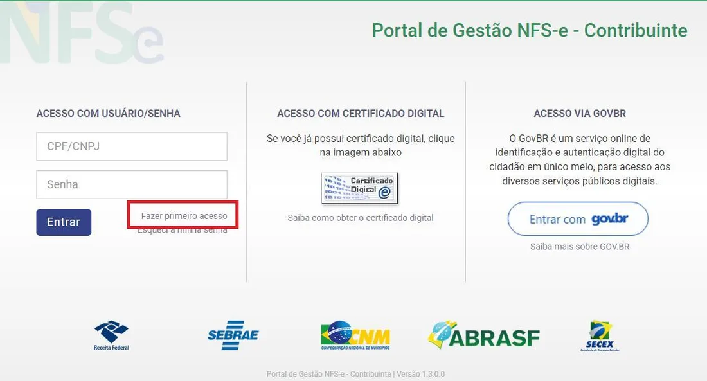
1
Abra o Emissor Nacional e clique em “Fazer primeiro acesso”
Na tela de entrada aparecem três formas de acesso: usuário e senha, certificado digital e gov.br. Para criar usuário e senha, clique em Fazer primeiro acesso.
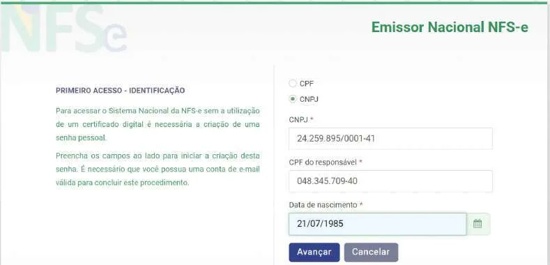
2
Informe CPF ou CNPJ e a data de nascimento
Escolha CPF ou CNPJ. Para empresa, informe o CNPJ, o CPF do responsável e a data de nascimento dele. Clique em Avançar.
💡 A data de nascimento precisa ser igual à do cadastro do CPF na Receita Federal.
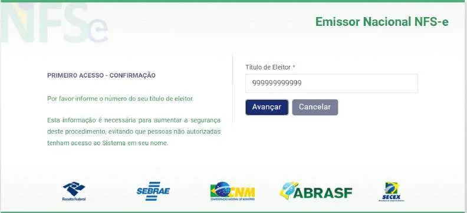
3
Informe o número do título de eleitor
O sistema pede o título de eleitor do CPF informado.
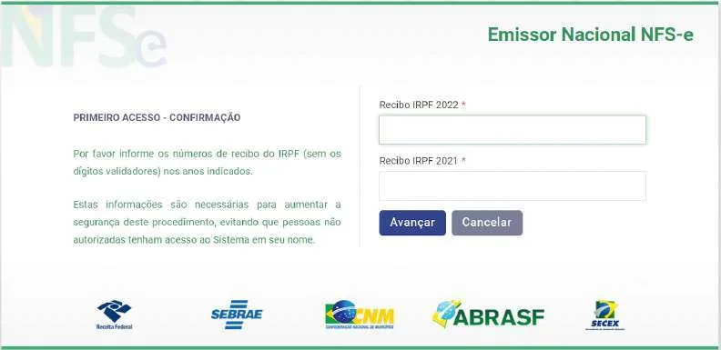
4
Se declarou Imposto de Renda, informe os recibos
Quem entregou a declaração de IR como pessoa física informa os números dos recibos dos dois últimos anos.
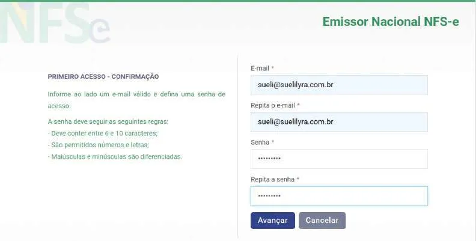
5
Cadastre o e-mail e crie a senha
Informe um e-mail que você acessa e crie a senha seguindo as regras da tela.
💡 Preste atenção no e-mail: é para ele que vai o código de confirmação.
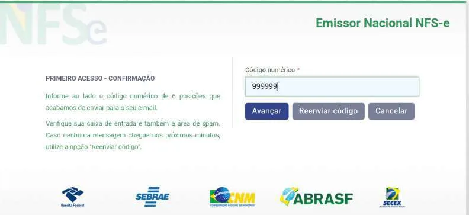
6
Digite o código que chegou no e-mail
O sistema envia um código numérico para o e-mail cadastrado. Digite o código e clique em Avançar. Pronto: o acesso está criado.
💡 Não chegou? Confira a caixa de spam ou clique em “Reenviar código”.
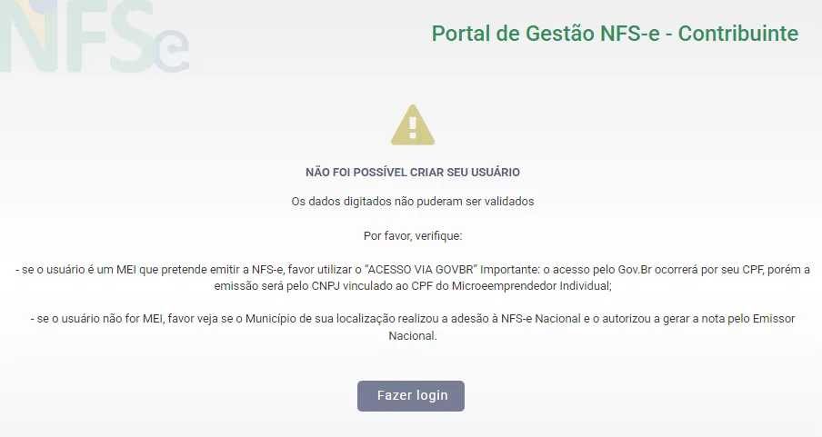
7
Apareceu “Não foi possível criar seu usuário”?
Os dados informados não conferem com os da Receita Federal. Nesse caso, entre com certificado digital ou procure a Secretaria de Finanças para o cadastro presencial.
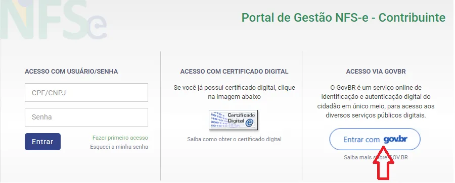
8
MEI: dá para entrar com a conta gov.br
O MEI pode clicar em Entrar com gov.br, sem criar senha. Precisa ser conta prata ou ouro.
Imagens e instruções: Guia do Emissor Público Nacional Web v1.2 (Sistema Nacional NFS-e) · Passo a passo: cadastramento e emissão de NFS-e (Sebrae/Receita Federal, fev/2023)
2. Configurar o emissor
Ajustes que você faz antes da primeira nota.
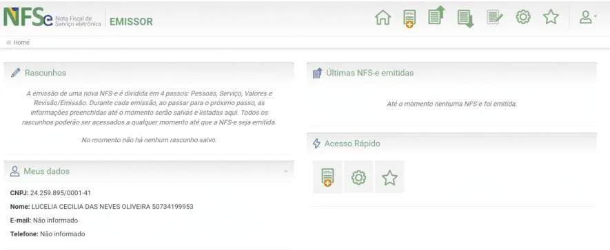
1
Entre e abra as Configurações
Faça login com CPF/CNPJ e senha. No primeiro acesso, abra as Configurações pelos ícones indicados no painel.
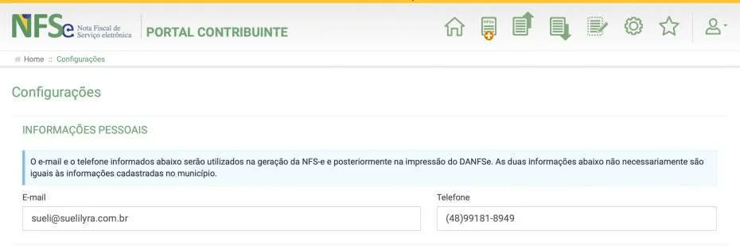
2
Preencha e-mail e telefone
São os contatos usados nas notas que você emitir.
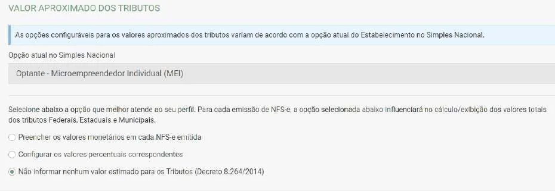
3
Escolha como mostrar o valor aproximado dos tributos
Marque a opção que se aplica ao seu caso e clique em Salvar.
💡 Em dúvida sobre qual opção marcar? Pergunte ao seu contador ou à Secretaria.
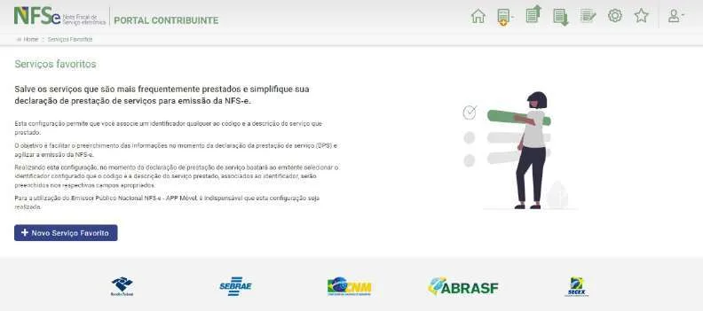
4
Cadastre seus serviços favoritos
Abra Serviços Favoritos e clique em Novo Serviço Favorito. Obrigatório para quem vai usar a emissão simplificada ou o aplicativo.
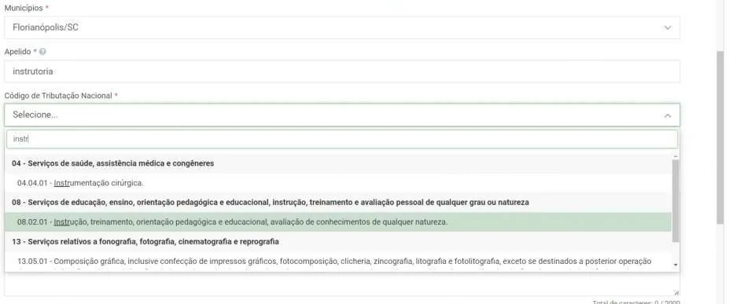
5
Dê um apelido e escolha o Código de Tributação Nacional
O apelido ajuda você a achar o serviço depois. O Código de Tributação Nacional é a classificação do serviço, igual em todo o Brasil.
💡 Confirme o código com o seu contador.
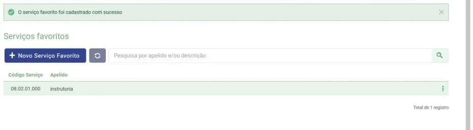
6
Serviço favorito cadastrado
Você pode cadastrar vários serviços favoritos.
Imagens e instruções: Passo a passo: cadastramento e emissão de NFS-e (Sebrae/Receita Federal, fev/2023)
3. Emitir a nota (emissão completa)
Disponível para todos os prestadores.
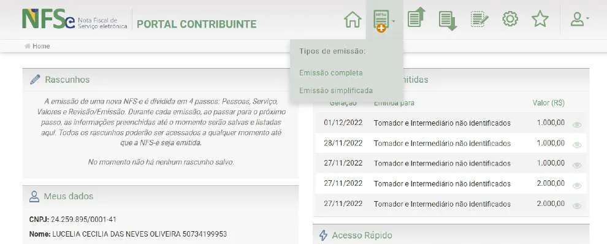
1
Escolha o tipo de emissão
No menu de emissão, escolha Emissão Completa. A Emissão Simplificada é para o MEI.
💡 A emissão completa é obrigatória, por exemplo, na exportação de serviço e quando o ISS é devido no município do cliente.
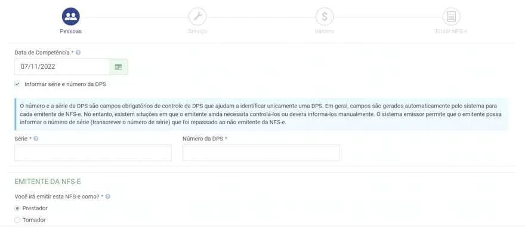
2
Informe a data de competência
É a data em que o serviço foi prestado. Deixe desmarcada a opção “Informar série e número da DPS”.
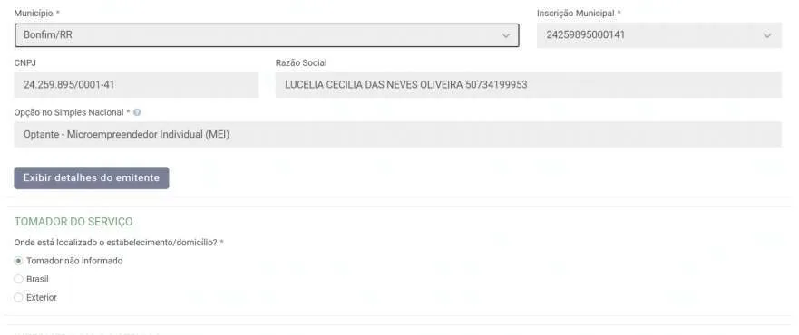
3
Confira os seus dados
Marque que você é o Prestador. Os seus dados vêm preenchidos automaticamente pelo cadastro.
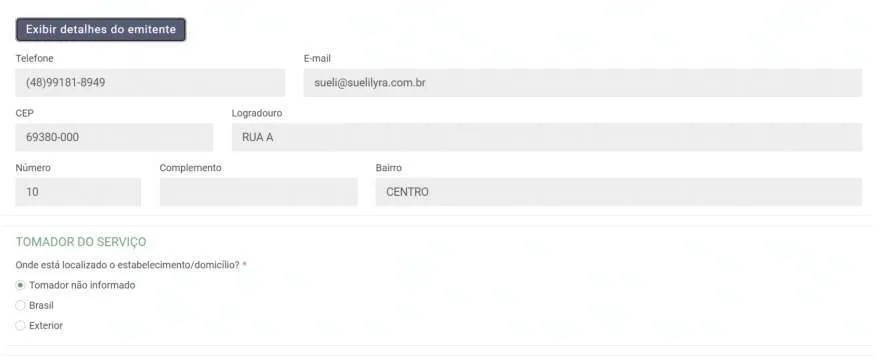
4
Informe o cliente (tomador)
Escolha Brasil ou Exterior e digite o CPF ou CNPJ do cliente. O nome aparece sozinho.
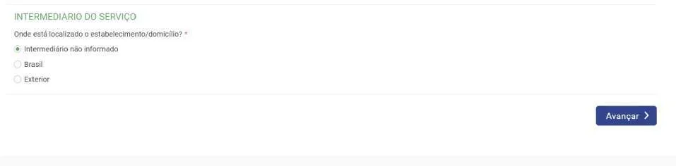
5
Intermediário
Na maioria dos casos, marque “Intermediário não informado” e clique em Avançar.
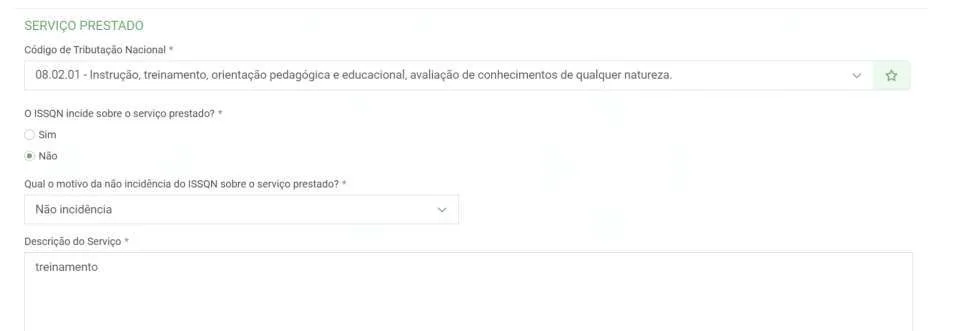
6
Informe o serviço prestado
Informe o município onde o serviço foi prestado, escolha o Código de Tributação Nacional e escreva a descrição do serviço.
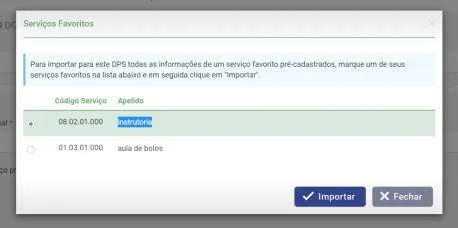
7
Atalho: importe um serviço favorito
Se já cadastrou o serviço como favorito, é só importar e os campos são preenchidos.
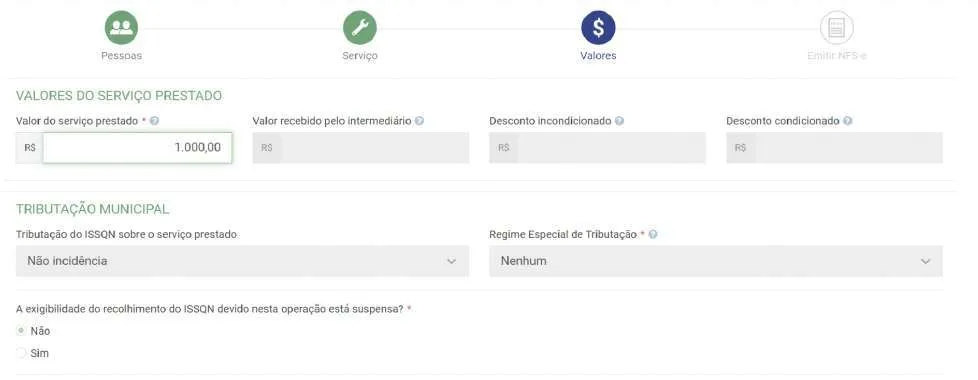
8
Informe os valores
Digite o valor do serviço. Na tributação municipal, a maioria dos prestadores marca o regime especial Nenhum.
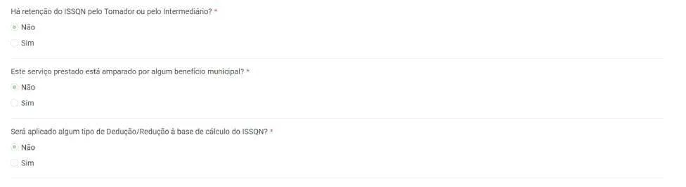
9
Responda as perguntas sobre o ISS
Exigibilidade suspensa? Retenção pelo tomador? Benefício municipal? Na maioria dos casos, a resposta é Não.
💡 Na dúvida, confirme com o contador ou com a Secretaria.
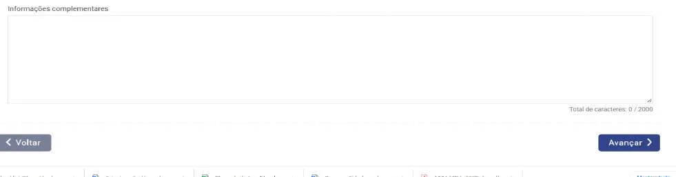
10
Informações complementares e avançar
Se precisar, escreva informações complementares. Clique em Avançar para conferir o resumo.
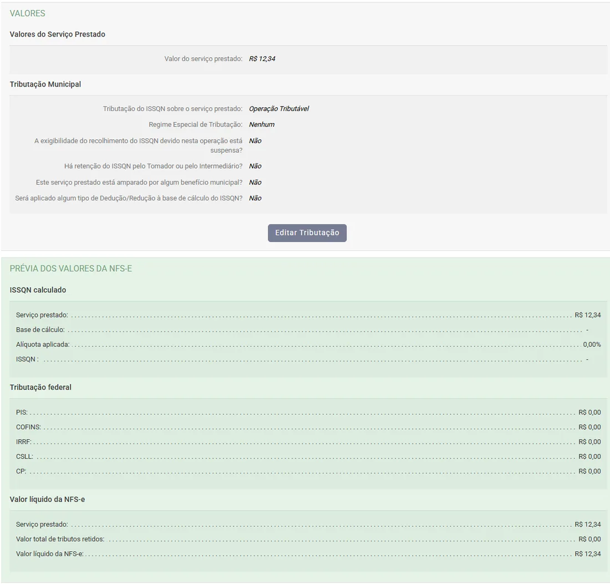
11
Confira e emita
Revise o resumo. Dá para voltar e editar Pessoas, Serviço ou Valores. Clique em Emitir NFS-e. Depois, baixe o PDF (DANFSe) e o XML para enviar ao cliente.
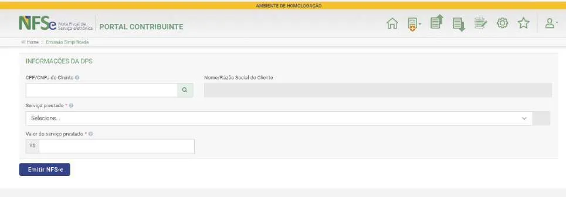
12
MEI: emissão simplificada
Na emissão simplificada, você escolhe um serviço favorito, informa o cliente e o valor, e emite.
Imagens e instruções: Passo a passo: cadastramento e emissão de NFS-e (Sebrae/Receita Federal, fev/2023) · Guia do Emissor Público Nacional Web v1.2 (Sistema Nacional NFS-e)
4. Emitir pelo celular (aplicativo NFS-e Mobile)
Para o MEI. O cadastro no site e os serviços favoritos vêm antes.
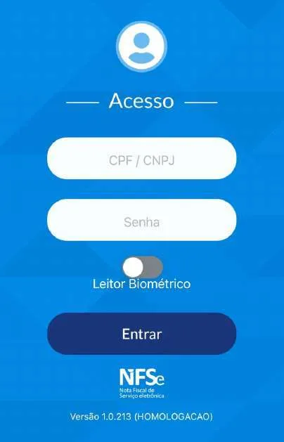
1
Baixe o app e entre
Baixe o NFS-e Mobile na App Store ou no Google Play e entre com o mesmo login e senha do site.
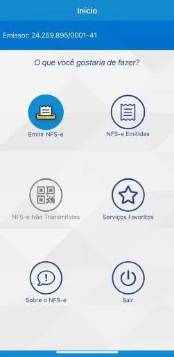
2
Toque em “Emitir NFS-e”
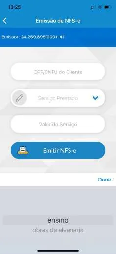
3
Escolha o serviço
O CPF/CNPJ do cliente é opcional. Aparecem os serviços cadastrados como favoritos no site.
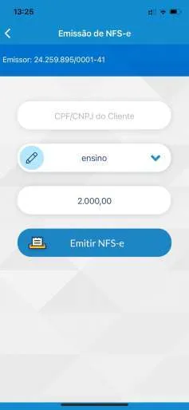
4
Informe o valor e emita
Digite o valor do serviço e toque em Emitir NFS-e.
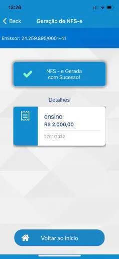
5
Nota emitida
Pronto: a nota foi emitida com sucesso.
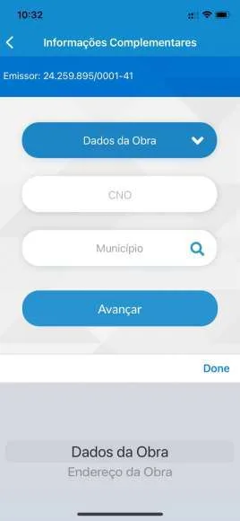
6
Serviço de obra?
Em Informações adicionais, informe o endereço da obra ou o número do CNO e o município.
Imagens e instruções: Passo a passo: cadastramento e emissão de NFS-e (Sebrae/Receita Federal, fev/2023)
5. Depois de emitir
Consultar, corrigir, cancelar e conferir notas recebidas.
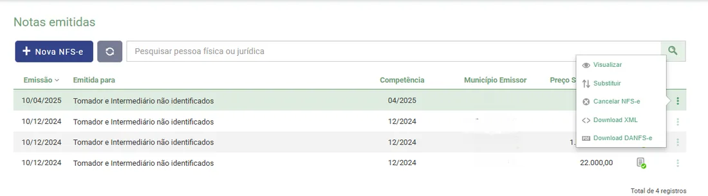
1
NFS-e emitidas
Em NFS-e emitidas, cada nota tem um menu com Visualizar, Substituir, Cancelar, Download XML e Download DANFSe.
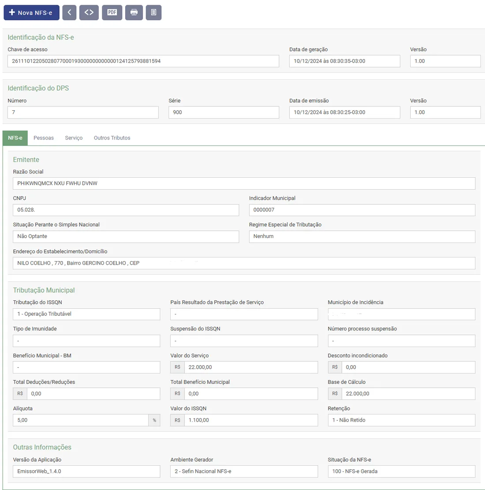
2
Visualizar a nota
Mostra todos os dados da nota e os eventos ligados a ela, como cancelamento ou substituição.
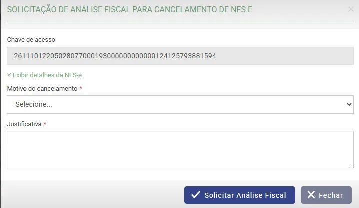
3
Cancelamento fora do prazo
Se o cancelamento não for mais permitido, o sistema oferece a Solicitação de Análise Fiscal: informe o motivo e a justificativa. O pedido vai para a Prefeitura analisar.
💡 Valor ou dado errado? Prefira Substituir: o emissor gera a nota correta e cancela a anterior.
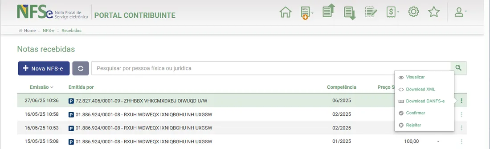
4
NFS-e recebidas
Aqui aparecem as notas em que você é o cliente (tomador) ou intermediário.
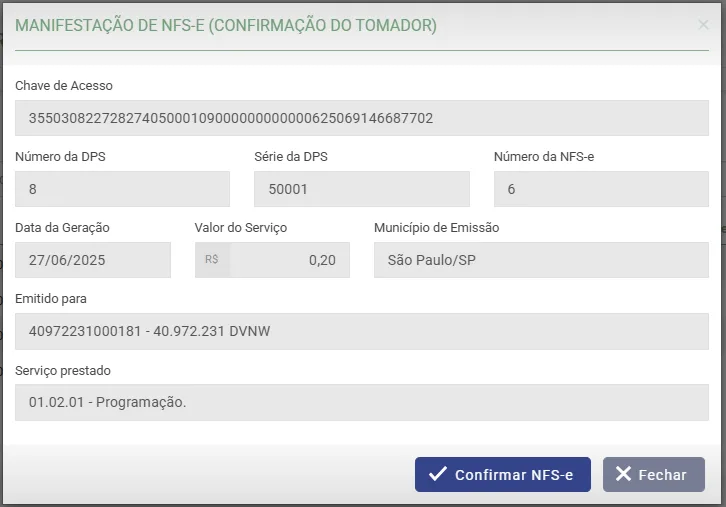
5
Confirmar uma nota recebida
Se você reconhece o serviço e concorda com os dados, clique em Confirmar NFS-e.
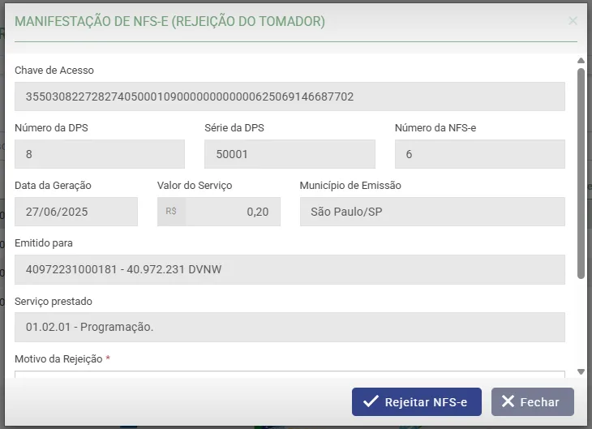
6
Rejeitar uma nota recebida
Se não reconhece a nota ou discorda dos dados, informe o motivo e clique em Rejeitar NFS-e.
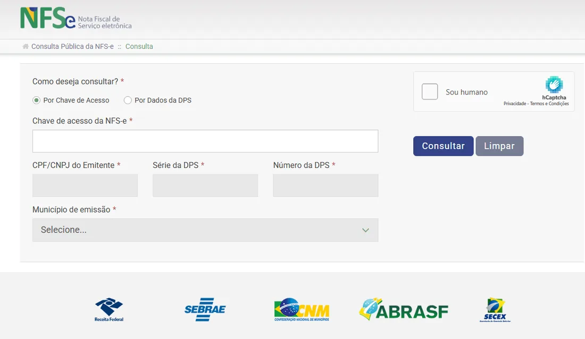
7
Consulta pública
Qualquer pessoa pode conferir uma NFS-e pela chave de acesso ou pelos dados da DPS, no portal nacional.
Imagens e instruções: Guia do Emissor Público Nacional Web v1.2 (Sistema Nacional NFS-e)
NFS-e NACIONAL
Depois de emitir: corrigir, cancelar e conferir
Onde encontrar suas notas, o que fazer quando errou e como conferir as notas que você recebe.
NFS-e Nacional › Depois de emitir
Errei na nota. E agora?
Em “NFS-e emitidas”, cada nota tem as opções Visualizar, Substituir, Cancelar, Baixar XML e Baixar DANFSe.
🔁 Substituir
Quando o serviço aconteceu, mas algum dado está errado (valor, descrição, cliente…).
Gera uma nota nova com os dados corrigidos
A nota original é cancelada automaticamente
As duas ficam ligadas, e o emissor mostra o comparativo
✖ Cancelar
Quando o serviço não aconteceu ou a nota não devia existir.
Informe o motivo e a justificativa
Fora do prazo, o cancelamento vira pedido de análise fiscal e vai para a Prefeitura decidir
Prazos em Canindé
Cada município define se há prazo máximo para substituir e cancelar e quantos dias são.
A definir pela Secretaria: prazo para substituição ___ dias · prazo para cancelamento ___ dias · quem analisa os pedidos fora do prazo.
Notas que você recebe
Em “NFS-e recebidas” aparecem as notas em que você é o cliente (tomador) ou intermediário.
✔ Confirmar
Você reconhece o serviço e concorda com os dados da nota.
⚠ Rejeitar
Você não reconhece a nota ou discorda dos dados. Informe o motivo.
As duas ações exigem assinatura e ficam registradas na nota.
Conferir se uma nota é verdadeira
Qualquer pessoa pode consultar uma NFS-e na Consulta Pública do portal nacional, usando a chave de acesso ou os dados da DPS.
Fonte: Guia do Emissor Público Nacional Web v1.2, itens 5, 6 e 9
NFS-e NACIONAL
Problemas comuns e como resolver
As mensagens de erro que mais aparecem e o que fazer em cada caso.
NFS-e Nacional › Problemas comuns
“A data de nascimento informada não corresponde ao CPF informado.”Primeiro acesso
A data digitada é diferente da que está no cadastro do CPF na Receita Federal. Confira a data. Se estiver certa, atualize o CPF no site da Receita ou agende o cadastro presencial na Secretaria.
“Não foi possível recuperar informações do Contribuinte.”Primeiro acesso
O CPF ou CNPJ não foi encontrado. Confira os números digitados. Se o CNPJ for novo, aguarde a atualização dos cadastros ou procure a Secretaria.
“Não foi possível criar seu usuário.”Primeiro acesso
Os dados de título de eleitor ou dos recibos do IR não conferem. Use o certificado digital ou faça o cadastro presencial na Secretaria de Finanças.
Não aparece a opção “Emissão Simplificada”.Emissão
A emissão simplificada está disponível para MEI. Os demais usam a Emissão Completa.
O aplicativo não mostra o meu serviço.Aplicativo
O aplicativo só mostra os serviços favoritos. Cadastre-os primeiro no Emissor Web, em “Serviços Favoritos”.
Meu cadastro aparece como bloqueado.Cadastro
O sistema deixa entrar, mas não deixa emitir enquanto o cadastro estiver bloqueado. A regularização é feita pela Secretaria de Finanças.
Preciso informar série e número da DPS?Emissão
Não. Deixe a opção desmarcada que o emissor numera sozinho.
Emiti com valor errado.Correção
Use Substituir: o emissor gera a nota correta e cancela a anterior. Veja como
Encontro com contadoresAuditório · 9h · códigos de serviço e retenções
SEGa SEX
Plantão de cadastro presencialDiretoria de Arrecadação · Rua Valdery Uchoa, 597 · seg. a qui., 7h30 às 17h · sex., 7h30 às 13h30
Não publicado: o “Guia prático de emissão de NFS-e pelo Emissor Nacional” (Group Legacy) é material de uma empresa privada e usa exemplos de Curitiba (ISS de 5% e percentuais de retenção genéricos). Aproveitei as explicações, mas não o publiquei para não confundir o contribuinte de Canindé.
Migração para a NFS-e Nacional
Acompanhe quais prestadores de Canindé já estão prontos para emitir, chame quem está atrasado e organize os atendimentos presenciais.
Prestadores de serviço ativos1.284
Já fizeram o primeiro acesso412
Já emitiram nota no Emissor Nacional296
Cadastros presenciais agendados37
Prestadores dados de exemplo
Contribuinte
Perfil
Situação
Contador
Oficina Silva ME
Simples
Sem acesso
Escritório A
Maria J. (cabeleireira)
MEI
Sem acesso
—
Clínica Boa Saúde Ltda
Presumido
Acessou, não emitiu
Escritório B
João P. (eletricista)
MEI
Emitindo
—
Construtora Sertão Ltda
Real
Bloqueado
Escritório A
Funil de preparação
Prestadores ativos1.284
Fizeram o primeiro acesso412
Emitiram ao menos uma nota296
Atendimentos presenciais de hoje
08:30
Antônia R. · MEI · não fez o primeiro acesso
09:00
Construtora Sertão · cadastro bloqueado
10:15
Francisco L. · data de nascimento não confere
A confirmar: a lista de prestadores sairia do cadastro mobiliário de Canindé, e a situação no Emissor Nacional do Painel Administrativo Municipal da NFS-e. Precisamos ver se esse painel exporta planilha ou se a atualização será manual.
Dúvidas do Conexão Empresarial
Perguntas deixadas na inscrição do evento de 19/09/2026. Classifique por tema, aprove a resposta do tema e envie a resposta a cada participante por e-mail.
Inscrições importadas114
Com pergunta24
Temas com resposta em rascunho6
Respostas enviadas0
Perguntas por participante respostas aguardando aprovação
Participante
Segmento
Pergunta
Tema
Situação
Origem dos dados: planilha de inscrições do evento (Anexo 16). Só os 24 inscritos que escreveram pergunta entram aqui. No portal público aparecem só a pergunta e o segmento, nunca o nome. Telefone e e-mail ficam guardados apenas para enviar a resposta. Todos os inscritos marcaram o consentimento no formulário. A confirmar: se esse consentimento cobre o envio de resposta por e-mail.
Monitor do Comitê Gestor
Tudo o que sai em cgibs.gov.br chega aqui automaticamente. A equipe decide o público, marca prazos e escreve o que muda para Canindé.
Vídeos, guias e cartilhascgibs.gov.br/central-de-conteudo
Publicar automaticamente o título e o link, sem esperar a equipeA explicação local pode ser acrescentada depois
A decidir: notícia nova do CGIBS aparece no portal na hora (só título + link, como está ligado acima) ou só depois que alguém da equipe ler?
Caixa de dúvidas
Responda por e-mail e, se for útil para outros, publique como pergunta frequente com a base oficial.
Novas12
Em resposta5
Respondidas no mês48
Tempo médio de resposta2,3 dias
Fila 5 dias úteis de prazo
Protocolo
Dúvida
Perfil
Situação
DUV-00143
Já sou do Simples. Preciso fazer opção de novo para continuar em 2027?
Empresa
Nova · 4º dia
DUV-00142
Como fica o ISS de obra feita em Canindé por empresa de fora?
Contador
Nova
DUV-00140
Sou MEI, preciso destacar CBS na nota?
MEI
Com Ana
DUV-00137
Quando o IPTU vai mudar?
Cidadão
Respondida
DUV-00143 Nova
Publicar conteúdo
Guias, dicas, vídeos, palestras e perguntas frequentes da Secretaria. Todo conteúdo informa a base oficial.
Novo conteúdo
Publicações da Secretaria
Título
Tipo
Situação
Simples “puro” ou “híbrido”
Guia
Publicada · 2.310 visitas
Palestra MEI e Simples Nacional
Palestra
Aguardando aprovação
NFS-e padrão nacional
Guia
Publicada · 1.240 visitas
Checklist para decidir o regime
Material
Publicada
Oficinas para contadores — novembro
Notícia local
Agendada p/ 15/10
Módulos do portal
Cada serviço da Secretaria é um módulo. Ligar coloca no menu e na página inicial; desligar tira do ar sem apagar nada.
Reforma Tributária
Guias, cronograma, perguntas frequentes, vídeos e materiais.
Ativo · público
Monitor de fontes oficiais
Captura automática do CGIBS. Depois pode incluir Receita Federal e Sefaz-CE.
Ativo · equipe + público
Fale com a Secretaria
Envio de dúvidas com protocolo e caixa de atendimento da equipe.
Ativo · público + equipe
Serviços online (atalhos)
2ª via do IPTU, ISS Eletrônico e certidão da empresa. Hoje são links para o sistema tributário do município (SpeedGov), com orientações e avisos do portal.
Ativo · público
NFS-e Nacional
Ambiente de preparação para o Emissor Nacional e painel de migração dos prestadores.
Ativo · público + equipe
Dívida ativa e parcelamento
Consulta de débitos inscritos e pedido de parcelamento.